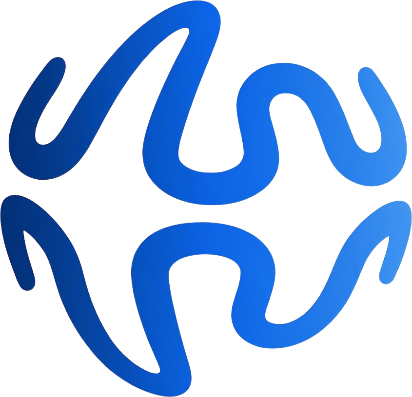
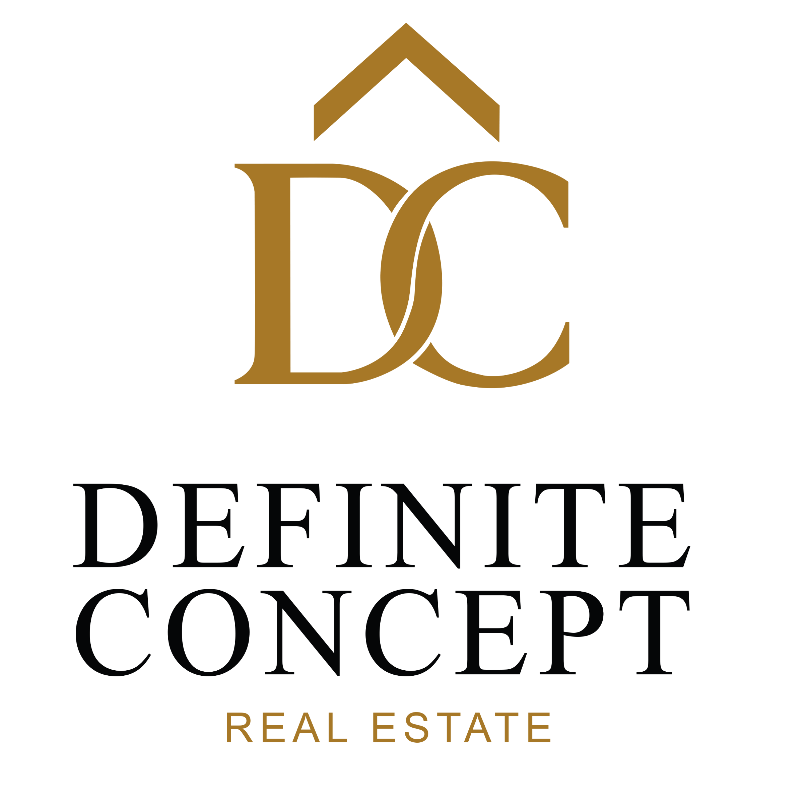

Integramos inteligência artificial no fluxo real de trabalho através de playbooks estruturados, com guardrails ativos e validação humana obrigatória em cada etapa crítica.
A IA estrutura. O humano decide. Sempre.
"Não somos formação. Somos a camada operacional que integra IA no trabalho real."
Sem contrato longo. Sem compromisso para além do que faz sentido. Avançamos quando os resultados da fase anterior justificam.
Sistema de orçamentação, seleção de fornecedores e acompanhamento de obra. Onde o risco financeiro é mais imediato.
A consultora operacional opera com sistema de qualificação desde o dia 1, sem depender da memória do Ruben.
Documentação legal, suporte à expansão geográfica e novos playbooks por necessidade identificada.
O acompanhamento de obra deixa de depender do CEO. Qualquer membro da equipa sabe o estado atual de cada projeto, o que falta validar, quais os prazos em risco, sem escalar tudo para o Ruben.
A nova consultora operacional tem, desde o dia 1, um sistema para qualificar oportunidades, sem depender da memória do Ruben.
Com expansão em curso, o sistema escala sem criar novos pontos de falha. O conhecimento fica na empresa, não nas pessoas.
Nenhum sistema toma decisões pelo cliente. A aprovação final é sempre humana. O que muda é a velocidade e a qualidade da informação no momento da decisão.
Cada fase só começa quando a anterior demonstrou resultados concretos. Não há pressão para acelerar. Só há razão para avançar quando faz sentido.
O objetivo é que a equipa opere de forma autónoma. O trabalho da peerwork é tornar-se cada vez menos necessário na operação diária.
Todos os playbooks e sistemas são propriedade da Definite Real Estate. Mesmo que a relação termine, os processos ficam documentados e operacionais.
Resposta do Ruben com luz verde para iniciar. Proposta de data para sessão de diagnóstico de obra (90 min, presencial ou videochamada).
Sessão com o Ruben e o financeiro. Mapeamento do fluxo real: orçamentação, fornecedores, acompanhamento. Identificação dos 3 pontos de maior risco.
Orçamentação + seleção de fornecedores. Acompanhamento + verificação de prazos. Validados com a equipa antes de fechar.
A equipa usa o sistema num caso real. Ajuste fino. Métricas de sucesso definidas. Decisão conjunta sobre Fase 2.
O Ruben identificou a necessidade.
Há abertura real e o timing é favorável.
A Fase 1 pode começar esta semana, sem burocracia, sem contrato longo, sem compromisso para além de quatro semanas. Antes disso, veja como ficaria o sistema de playbooks aplicado à Definite Real Estate.
Veja como funciona